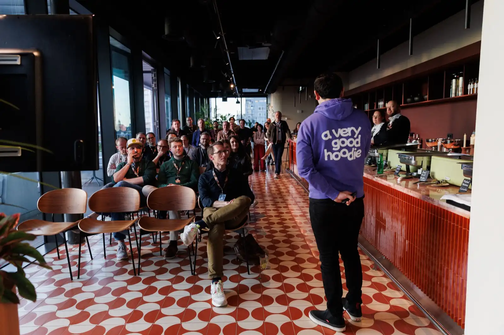
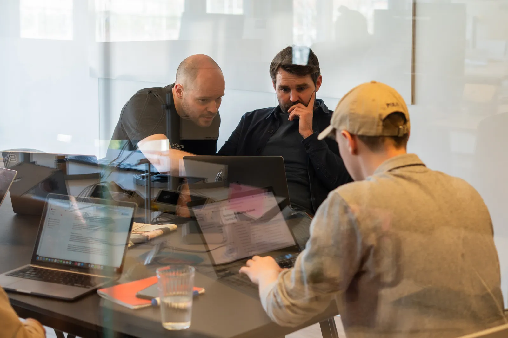
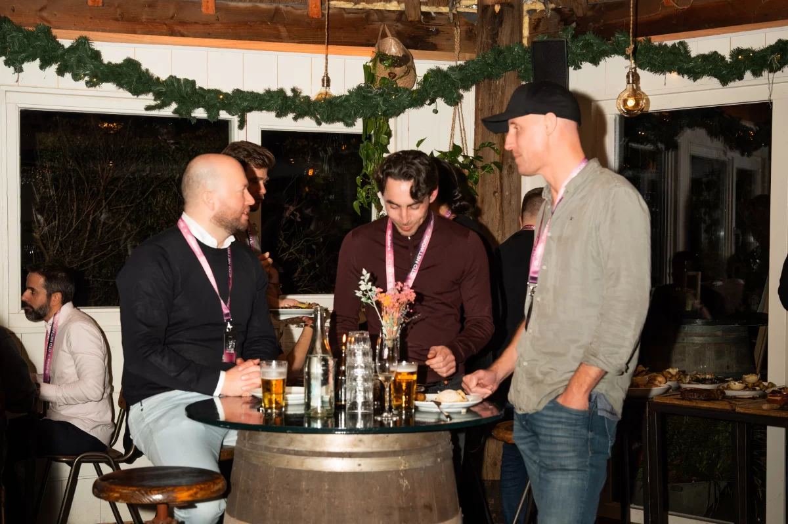
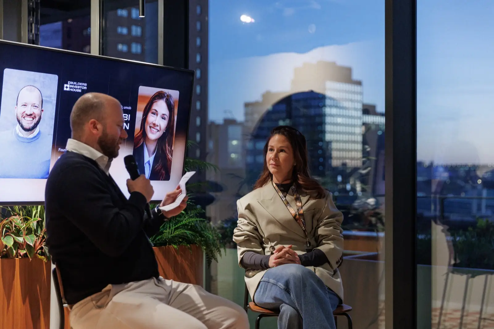
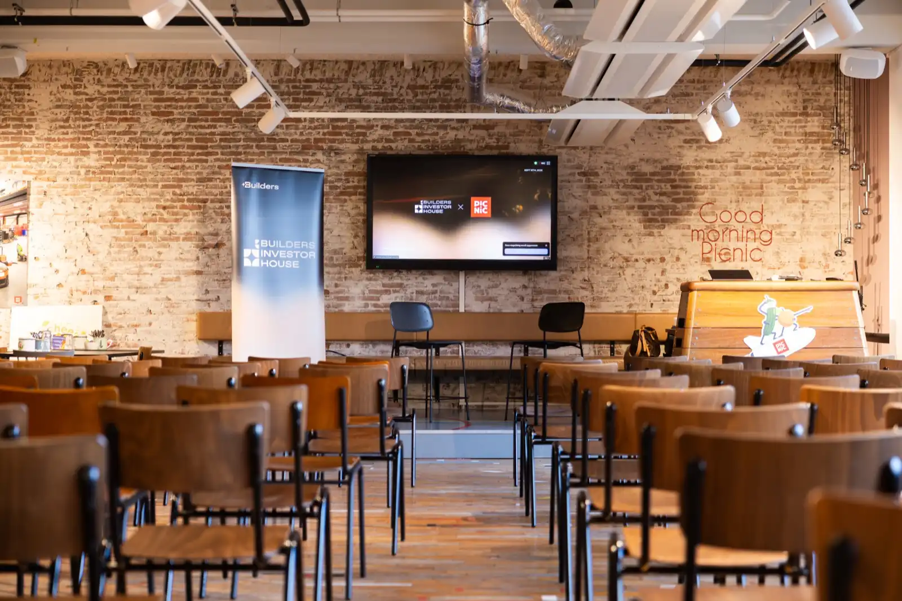
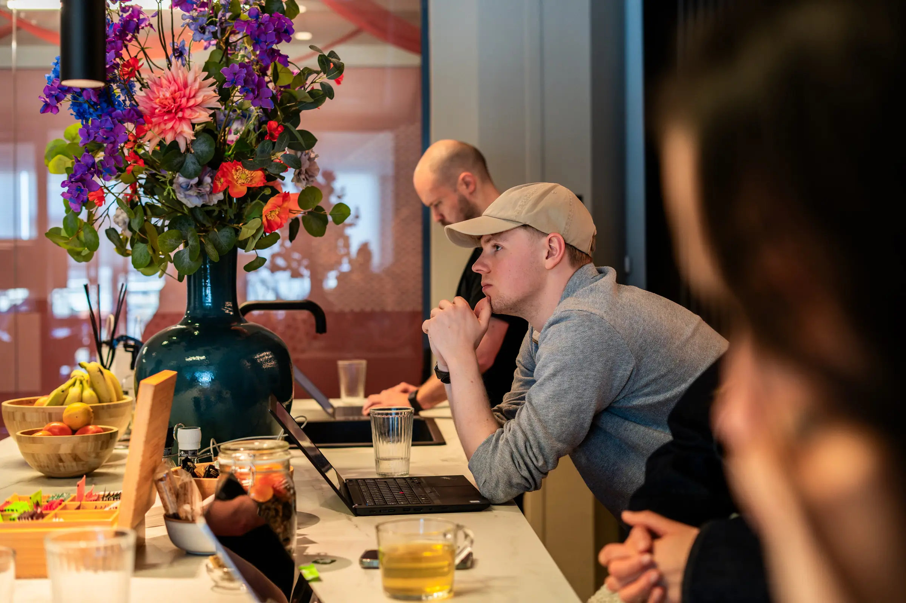
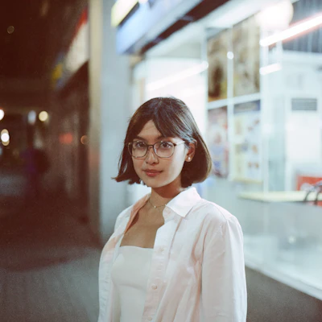
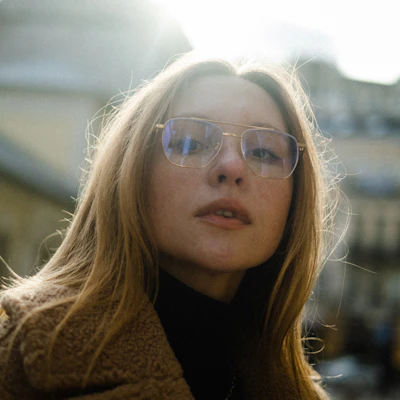
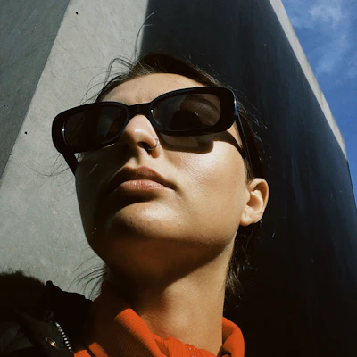

05
Photography
Real studio photography only — events, founders, the work. When there is no photo, the brand gradients take its place.
Events

Demo night
Founder weekend Fireside
Fireside
CTO social
Investor house
Winter socialThe work
Whiteboard
Meeting room

BuildingFounders



Style direction
| Subject | Real people at real moments — founders presenting, rooms mid-conversation, the city the studio works from. |
| Light | Ambient and honest. Event light as it was; no strobes, no staging. |
| Treatment | A gradient scrim (ink 0.5 → 0.85, vertical) whenever type sits on the image. |
| Gradients | Solid variants for flat backgrounds, alpha variants layered over photos. |
Rules
Do
- Photography from the studio's own library.
- A third of the frame quiet for type.
- Scrim before setting white copy on an image.
Don't
- No stock photography, ever.
- No heavy grading over the accents.
- No faces cropped mid-expression.
Signature elements
Flip-clock countdownDeadline tiles, baked at render time — regenerate the morning you post.
Fanned avatarsThe overlapping headshot strip for community and batch posts.
Boarding-pass ticketThe event-invite card: perforation, stub, and all.
Phase chipsThe five-color scale marking program phases and staged sequences.